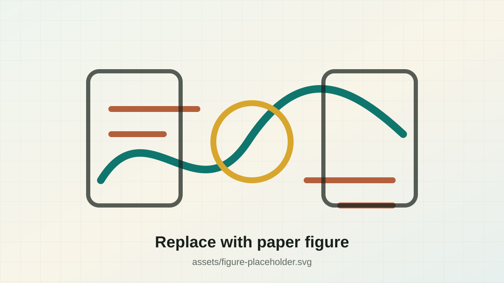

Research Project Page Template
BioXArena: [Replace with Your Paper Title]
1Institution One 2Institution Two 3Institution Three
Abstract
Paper Summary
[Replace this paragraph with the paper abstract. Briefly introduce the research problem, the proposed benchmark or method, the experimental setup, major findings, and why the work matters. This template keeps the abstract readable on desktop and mobile, so a normal paper-length abstract can be pasted here directly.]
Figures
Main Illustrations

Citation
BibTeX
@inproceedings{bioxarena2026,
title = {BioXArena: [Replace with Your Paper Title]},
author = {Author One and Author Two and Author Three and Author Four},
booktitle = {[Conference or Journal Name]},
year = {2026},
url = {https://example.com/paper}
}